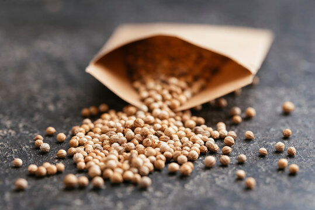
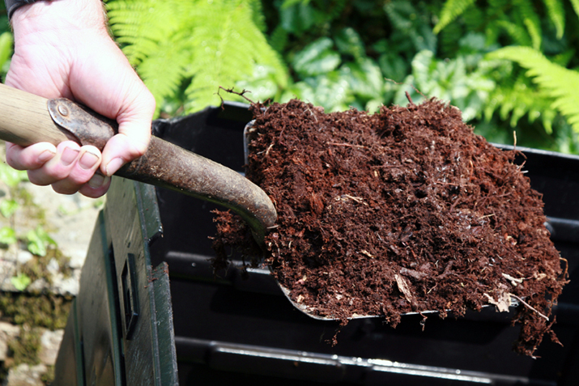

Explore Our Products

High-Quality Seeds
Discover a variety of seeds for all types of crops.

Organic Fertilizers
Buy organic fertilizers to boost your crop yield.

Farming Machinery
Find the best machinery for efficient farming.